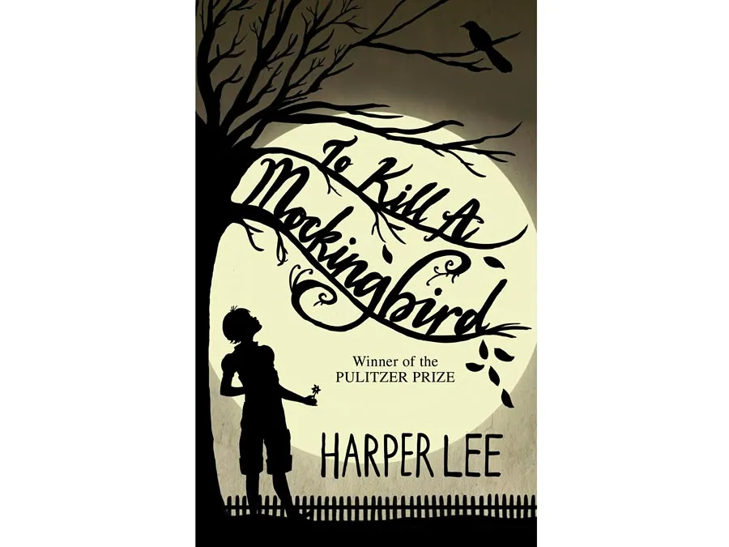
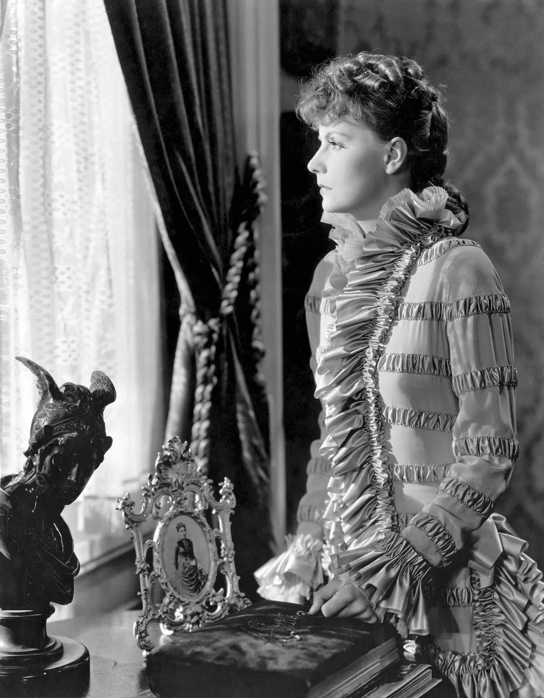

Harper Lee, believed to be one of the most influential authors to have ever existed, famously published only a single novel (up until its controversial sequel was published in 2015 just before her death). Lee’s To Kill a Mockingbird was published in 1960 and became an immediate classic of literature. The novel examines racism in the American South through the innocent wide eyes of a clever young girl named Jean Louise (“Scout”) Finch. Its iconic characters, most notably the sympathetic and just lawyer and father Atticus Finch, served as role models and changed perspectives in the United States at a time when tensions regarding race were high. To Kill a Mockingbird earned the Pulitzer Prize for fiction in 1961 and was made into an Academy Award-winning film in 1962, giving the story and its characters further life and influence over the American social sphere.
Any fan of stories that involve juicy subjects like adultery, gambling, marriage plots, and, well, Russian feudalism, would instantly place Anna Karenina at the peak of their “greatest novels” list. And that’s exactly the ranking that publications like Time magazine have given the novel since it was published in its entirety in 1878. Written by Russian novelist Leo Tolstoy, the eight-part towering work of fiction tells the story of two major characters: a tragic, disenchanted housewife, the titular Anna, who runs off with her young lover, and a lovestruck landowner named Konstantin Levin, who struggles in faith and philosophy. Tolstoy molds together thoughtful discussions on love, pain, and family in Russian society with a sizable cast of characters regarded for their realistic humanity. The novel was especially revolutionary in its treatment of women, depicting prejudices and social hardships of the time with vivid emotion.
E.M. Forster wrote his novel A Passage to India after multiple trips to the country throughout his early life. The book was published in 1924 and follows a Muslim Indian doctor named Aziz and his relationships with an English professor, Cyril Fielding, and a visiting English schoolteacher named Adela Quested. When Adela believes that Aziz has assaulted her while on a trip to the Marabar caves near the fictional city of Chandrapore, where the story is set, tensions between the Indian community and the colonial British community rise. The possibility of friendship and connection between English and Indian people, despite their cultural differences and imperial tensions, is explored in the conflict. The novel’s colorful descriptions of nature, the landscape of India, and the figurative power that they are given within the text solidifies it as a great work of fiction.